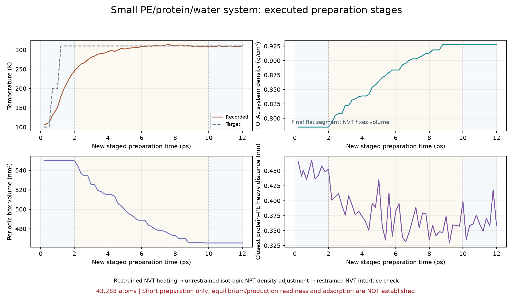
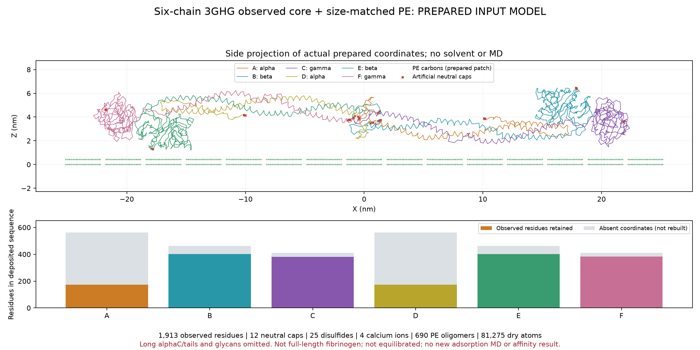
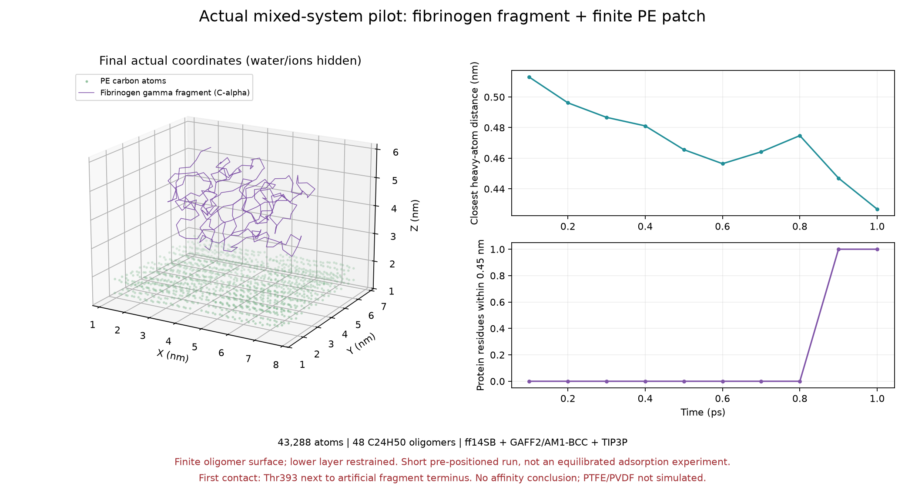
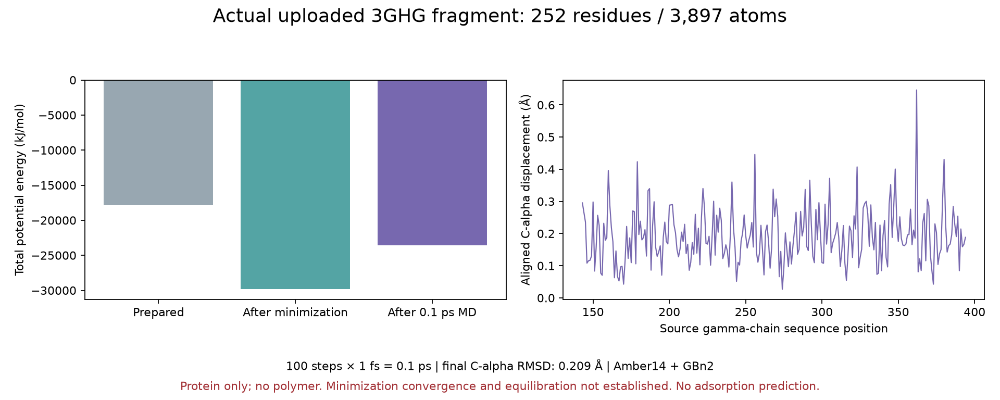

PTFE
[–CF₂–CF₂–]ₙ
불소로 둘러싸인 탄소 사슬. 낮은 표면 에너지와 소수성이 알려져 있지만, 이것만으로 단백질 흡착 순위를 정할 수 없습니다.
실제 PE 계산 실행 · 진행 상태와 결과 · 구조 탐색
검증된 PE 시작 상태에서 OpenMM을 실행합니다. 브라우저를 닫아도 계산은 별도 작업으로 계속됩니다.
실행기에 연결 중…
310 K 준비와 짧은 밀도 추세 검사입니다. 계면 평형·흡착 세기·재료 순위는 아직 평가하지 않습니다. 큰 모델은 긴 αC 말단과 당쇄가 생략된 관측 코어입니다.
실선: 실제 운동 온도 · 점선: 목표 온도. 기록이 생기면 표시됩니다.
100 ps NPT → 구조 검사 → 계면 억제 조정·해제 → 여섯 사슬 큰 모델 용매화·중화. 보고서의 상태와 실제 실행 길이를 확인하세요.
진행·최종 후속 보고서 열기 · 이전 결과를 포함한 통합 보고서577,890원자 혼합계 · 추가 2 ps 유지 · 큰 모델 MD 누적 3 ps
위치 억제·고정 상자의 짧은 저온 수치 시험입니다. 310 K 가열·압력/밀도 조정·계면 평형·흡착 세기 검증은 아직 완료하지 않았습니다.
최신 결과와 설명 · 전체 보고서 · 원본 관측 CSV
가열·밀도 조정·계면 점검을 짧게 실행한 준비 구간입니다. 평형화 완료나 생산 계산 준비 완료를 뜻하지 않습니다. 이전의 작은 γ절편 모델이며 새 여섯 사슬 코어 결과가 아닙니다.
단계적 준비 결과 보고서 HTML · 실행 기록 CSV
이 카드는 물 없는 입력 준비 당시의 기록입니다. 이후 용매화·저온 MD는 위 최신 결과에서 확인하세요. 긴 αC·기타 말단과 당쇄가 생략되어 전체 길이 피브리노겐 모델이 아닙니다. 아래의 이전 γ절편 계산과 구분하세요.
모델 준비 보고서 HTML · 검증 메타데이터 JSON
유한 길이 PE 올리고머 표면과 단백질 조각을 가까이 배치한 짧은 준비 계산입니다. 평형 흡착·결합 자유에너지·재료별 우열은 검증하지 않았습니다. PTFE/PVDF 계산은 아직 없습니다. 첫 PE 계산의 접촉은 인공 절단 말단 근처에서 관찰되어 전체 단백질 결합 위치로 해석할 수 없습니다.
거리·접촉 데이터 CSV · 최종 혼합계 좌표 PDB
단백질만 포함한 짧은 준비 계산입니다. 폴리머 흡착이나 결합 세기를 평가한 결과가 아닙니다.
계산 데이터 CSV · 최종 좌표 PDB모식도로 조작을 연습하거나 실제 PDB 파일을 여세요.
Cα와 이상적인 평면 사이의 기하학적 거리입니다. 원자 수준 접촉·수소결합 판정이 아닙니다. 표면 선택은 설명과 색상만 바꾸며, 계산에 재료별 힘을 적용하지 않습니다.
불소로 둘러싸인 탄소 사슬. 낮은 표면 에너지와 소수성이 알려져 있지만, 이것만으로 단백질 흡착 순위를 정할 수 없습니다.
분극을 가질 수 있는 고분자. 결정상과 사슬 배향, 분극 방향을 표면 모델에 명시해야 합니다.
비극성 탄화수소 사슬. 결정성·거칠기·산화 여부가 실제 표면의 성질을 바꿀 수 있습니다.
① 구조 출처·누락 잔기 확인 → ② 고분자 표면과 힘장 준비 → ③ 물·염을 포함한 반복 MD → ④ 접촉·구조 변화 분석 → ⑤ 흡착 자유에너지 계산
피브리노겐은 길고 유연한 다중 사슬 단백질입니다. 실험 구조의 누락 영역과 결정학적 조립체를 확인해야 합니다. RCSB PDB에서 구조 검색 ↗